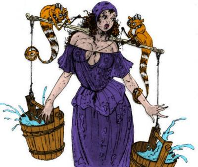

La Chaussée du lac
C'est le quartier du port, sans conteste le plus pauvre et le plus mal famé de la cité. On y trouve majoritairement des pécheurs, des soldats, et des artisans sans grand talent, mais peu chers. Les odeurs de poissons sont courantes et souvent nauséabondes. Toutefois c'est un quartier clé de la ville, car cette dernière ne possédant aucune culture ou élevage propre, c'est là que la plupart des denrées alimentaires consommées en ville arrivent, et c'est là également que transitent la majorité des biens commerciaux entre Laelith et les provinces. Sans compter que la pêche est un pilier de l'alimentation à Laelith.
La milice de cette terrasse porte des brassards de couleur bleu. Il y a 4 postes de gardes sur la Chaussée du lac. Un sur l'échelle des Soldats, un près du pont des Pêcheurs, un au pied de l'échelle de l'Auberge qui pue, sur les quais, et un en bas de la place du Crâne.
→ Voir la carte interactive de Laelith.
Lieux particuliers
Chariot qui monte. C'est le nom du funiculaire souterrain qui relie la Haute Terrasse au port. Deux chariots, l'un montant tandis que l'autre descend, permettent ainsi de passer en toute discrétion du petit fort sur les quais à la Haute Terrasse. Y transitent des personnalités importantes, des espions, des marchandises, et même le Roi-Dieu.
Comptoir de l'Aventure. D'apparence, une taverne comme les autres, tenue par un gnome, Hushyar. Mais à l'intérieur, les murs sont tapissés de petites annonces. C'est là que la majorité des citoyens de Laelith recrutent des hommes de main et des aventuriers. Les annonces, souvent anodines, concernent tous types de travaux, légaux et illégaux. Attention donc à bien sélectionner.
Échelle du Sabot. La rue la plus chaude de toute la ville. De nombreuses maisons de joie, cabarets sordides, et salles de jeux clandestines y ont élu domicile. On y trouve de nombreux soldats en permission ou bien des marins en quête de divertissement.
Halle aux pêcheurs. Cette grande bâtisse qui surplombe l'entrée du pont des Pêcheurs est le plus grand marché de poissons de la ville. Odeurs garanties !
Jardins du Canal-Rideau. Les cascades de ces jardins, alimentées par un aqueduc, alimentent en eau douce presque toute la Chaussée du lac.
Maison des Mille fleurs [quai des Contrebandiers]. Parmi les plus anciennes institutions de la ville, cet établissement est à la fois une excellente table, un bar raffiné, une salle de spectacle réputée, une grande salle de jeu et une maison de joie de luxe. Voir la page consacrée pour plus de détails.
Piste dorée [échelle du Gobelet d'or]. C'est un caravansérail, l'endroit où terminent toutes les caravanes marchandes arrivant du sud. Là se concluent les affaires entre acheteurs et vendeurs, et là se forment les caravanes qui repartiront de Laelith. Les ailes du bâtiment servent d'écuries et les étages de grand entrepôt. Le bâtiment central abrite l'administration du caravansérail et l'étage sert de dortoirs (1 nuit gratuite). Le riche responsable de l'ensemble est un nommé Drappish.
Poignard Sanglant [rue des Abattoirs]. C'est sur cette terrasse que se trouve le quartier général de la plus puissante guilde d'assassins de Laelith : le Poignard Sanglant. De curieuses relations avec les autorités et la Haute Guilde de la ville font que cette organisation perdure depuis des siècles sans être inquiétée outre mesure.
Port de pêche. Les pêcheurs vivent ici, la plupart sur leurs bateaux. Tous les matins y a lieu un marché à la criée pour déterminer le prix des poissons.
Port du Roi-Dieu. Le Tanith-Lenath, le navire du Roi-Dieu, est lui amarré à l'écart des navires de la flotte, au sud du port.
Port militaire. Le petit village qui s'est construit autour du port est habité par les familles des soldats. Les bâtiments fortifiés du port servent aussi de prisons militaires. Et c'est là bien entendu que se trouve la flotte royale. À noter que tous les bâtiments militaires du port sont équipés de puissantes catapultes.
Porte Nord. L'accès à Laelith par le Nord. Voir la page consacrée pour plus de détails.
Quartiers militaires. On y trouve les baraquements de l'armée et de la garde, ainsi que les écuries. Ces dernières font office de pensionnats pour les animaux arrivant à la porte Nord, mais servent également d'armurerie et de dépôt de marchandises. Sur la rampe des Soldats, au nord du temple du Crâne, se trouvent les quartiers privés des trois généraux de l'armée royale.
Temple du Crâne. Voir la page consacrée pour plus de détails.
Temple du Poisson d'argent. Voir la page consacrée pour plus de détails.
Auberges et tavernes
Quelques auberges et tavernes de cette terrasse.
Auberge de la Lune ivre [27 échelle du Départ]. Tenue par Pollth, l'endroit est sale et mal famé. Les odeurs de vinasse et de poisson y sont très fortes.
Auberge du Dragon rouge [13 rue sous le Temple]. Tenue par Marxy l'ancien, un ancien aventurier. Retiré depuis des années, il a conservé sa condition physique et il vaut mieux ne pas le chercher.
Taverne À la grosse Lulu [quartier des Pêcheurs]. Tenue par Wargeen et fréquentée par des gredins de toutes espèces.
Taverne Au joyeux Roulier [quartier des Pêcheurs]. Tenue par deux frêres, Wsym et Gandel Kawa. Bonne fréquentation et proche du port.
Taverne Au port de Pidjiguïti [56 échelle de l'Auberge qui pue]. Tenue par Arnold Noirnègre. Spécialité de nourriture utruz.
Taverne de la Cruche pleine [impasse du Petit matin]. Tenue par Petro. L'intérieur de la taverne est sale et renferme une belle palette de bandits et de brigands en tout genre.
Taverne du Chat bossu [place de la Cloche]. Tenu par un jeune, Zenok, et fréquentée principalement par des jeunes, la taverne se transforme souvent le soir en cabaret.
Taverne du Chat pourri [27 rue des Abattoirs]. Tenue par Sachin Rakic. Très mal fréquentée, on y vend plusieurs sortes de drogues.
Taverne Le retour du Pêcheur [6 rue des Mâts]. Tenue par Makrin « Espadon ». Le plafond est bas, le décor marin, et on y sert de l'arak, un alcool très fort.
Personnalités
| Nom | Description | Lieu et Occupation |
|---|---|---|
| Pollth | Adulte | Aubergiste (auberge de la Lune ivre) |
| Marxy l'ancien | Vieux | Aubergiste (auberge du Dragon rouge) |
| Hushyar | Gnome, adulte | Aubergiste (comptoir de l'Aventure) |
| Wargeen | Adulte | Aubergiste (taverne À la grosse Lulu) |
| Gandel Kawa | Adulte | Aubergiste (taverne Au joyeux Roulier) |
| Wsym Kawa | Adulte | Aubergiste (taverne Au joyeux Roulier) |
| Arnold Noirnègre | Adulte | Aubergiste (taverne Au port de Pidjiguïti) |
| Petro | Adulte | Aubergiste (taverne de la Cruche pleine) |
| Zenok | Jeune | Aubergiste (taverne du Chat bossu) |
| Sachin Rakic | Adulte | Aubergiste (taverne du Chat pourri) |
| Makrin « Espadon » | Adulte | Aubergiste (taverne Le retour du Pêcheur) |
| Uriab d'Oltz | Adulte | Général du corps de cavalerie |
| Nimos d'Astrie | Adulte | Général du corps d'infanterie |
| Korth l'invaincu | Vieux | Général en chef de l'armée royale |
| Tersir | Adulte | La Piste dorée (caravansérail), chef des scribes |
| Drappish | Adulte | La Piste dorée (caravansérail), propriétaire |
| Gressid | Adulte | La Piste dorée (caravansérail), responsable de la sécurité |
| Endoliam | Nain, vieux | Maison des Mille fleurs, chef des cuisines |
| Songar | Vieux | Maison des Mille fleurs, précepteur d'Yphria d'Esharzy |
| Yphria d'Esharzy | Adulte | Maison des Mille fleurs, propriétaire |
| Meriag « Briseur d'os » | Adulte | Maison des Mille fleurs, responsable de la sécurité |
| Grocarl Auqsap | Adulte | Merker de la Garde Principale |
| Kalya Fog | Demi-elfe, adulte | Ordre de Saris, conservateur de la Main de Saris |
| Valerian | Vieux | Ordre de Saris, grand maître de l'ordre |
| Franz Heilden | Vieux | Ordre de Saris, Haut commandeur du Gant de Saris |
| Valdenath | Adulte | Temple du Crâne, Grand prêtre |
| Glizarius | Jeune, fils d'Orfal | Temple du Crâne, prêtre |
| Xéniphys | Vieux | Temple du Poisson d'argent, Grand prêtre |
| Jeremy | Jeune | Temple du Poisson d'argent, prëtre |
Les doudilains
Doués d'une agilité surprenante, les doudilains sont de petites créatures semblables à des ratons laveurs et de la couleur des renards. Dotés également d'une intelligence quasiment humaine, ils possèdent un sens de l'intuition très développé qui leur permet, entre autres, de prévenir presque n'importe quel danger. Intrépides, les doudilains passent leurs journées à faire des farces et à embêter les humains, notamment avec leurs rires particulièrement agaçants. Mais, avec énormément de patience et de bonté, il est possible de s'attirer leur faveur, et ils peuvent alors se convertir en de fidèles et prévenants compagnons. Ces lémuriens se sont convertis en une sorte de mascotte de Laelith et on les trouve principalement sur la terrasse de la Chaussé du lac.